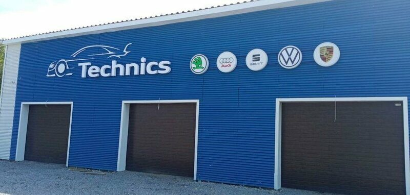
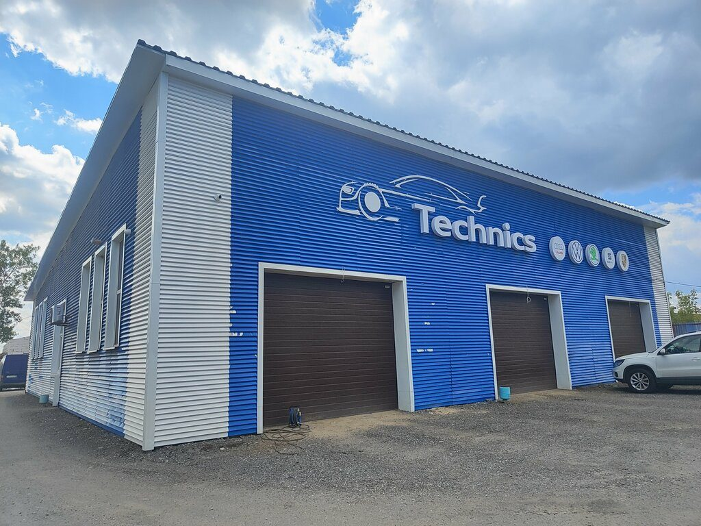
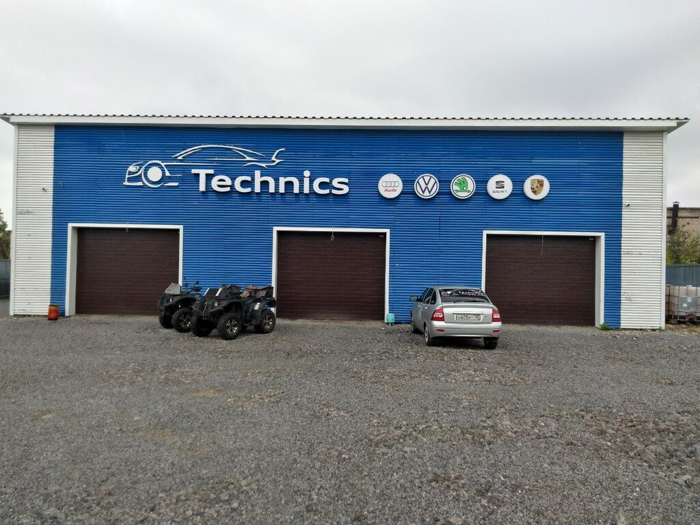
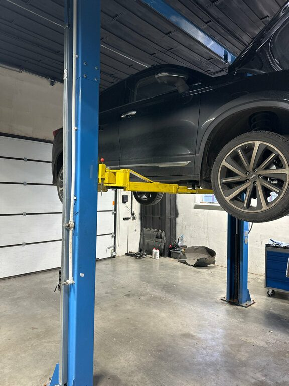
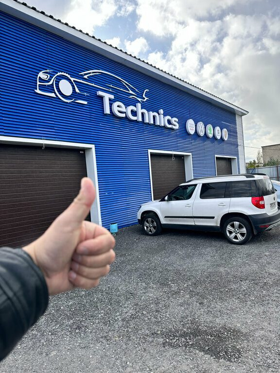
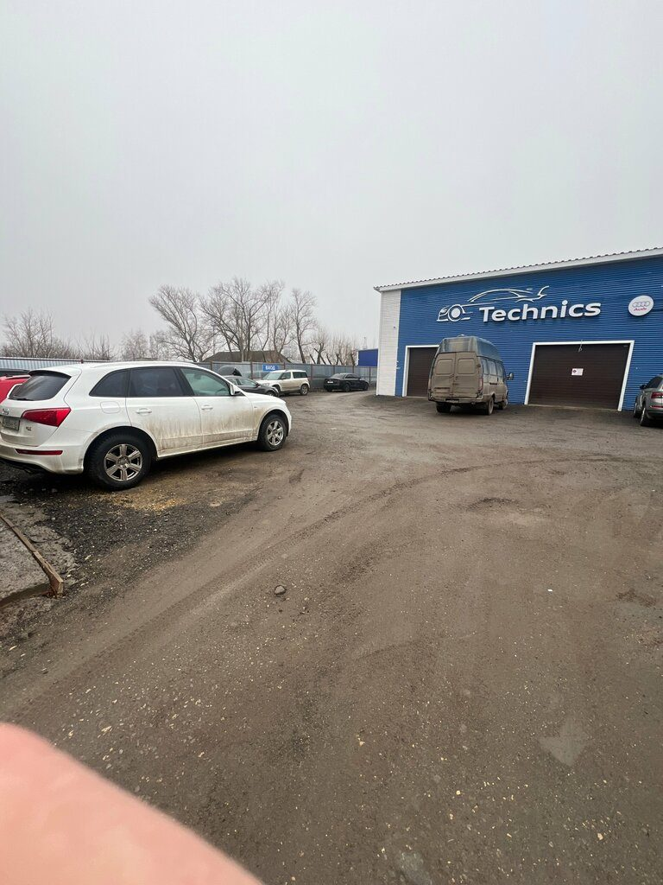

Ремонт DSG и АКПП, двигатель, ходовая, автоэлектрика и компьютерная диагностика. Плановое ТО и замена масла. Запись по телефону.
ул. Клары Цеткин, вл33Липецк, Правобережный округ, м-н Студёнки
Пн–пт 09:00–18:00 Сб, вс — выходной
+7 (905) 043-36-26Запись, вопросы по ремонту и запчастям
Оплата картойТуалет
Список работ — как он указан на карточке сервиса. Не нашли свою поломку — позвоните, подскажем.
Марки указаны на карточке сервиса. Узкая специализация — значит, знакомые болезни, нужное оборудование и опыт именно с вашей машиной.

По разбору отзывов на Яндекс.Картах.
положительных отзывов о персонале
Компетентные, доброжелательные сотрудники.— Надежда Муровлянникова, 2 августа
положительных отзывов о ремонте
Быстро нашли причину поломки, озвучили более чем адекватный ценник и отремонтировали авто.— Надежда Муровлянникова, 2 августа
положительных отзывов о времени ожидания
Соблюдают все договоренности, включая сроки.— Алексей Ш., 26 декабря 2024, Яндекс.Карты
Снимки с карточки Яндекс.Карт. уточнить: свежие фото бокса, мастеров и зоны ожидания





саня власов23 октября 2025
«Обратился с заменой сцепления DQ 200, Audi A3 1.4, Первый мой приезд в эту организацию был связан с диагностикой трансмиссии, меня встретил сотрудник Петр в назначенное время, прокатились, подключились, все рассказал и объяснил, договорились о замене. Сцепление покупал в этом сервисе, да бы избежать проблем с контрафактом, цена рыночная, меня все устроило, цена за запчасти и стоимость работы. Второй раз приехал в назначенное время для производства работ, сделали в оговоренный срок, попутно поменяли масло в механической части, и сфотографировали номер двигателя по моей просьбе. На следующий день забрал автомобиль, все работает как и должно! Спасибо большое, очень хороший сервис, и замечательные мастера! Персональная благодарность Петру - замечательному специалисту! Рекомендую!»
Павел30 апреля
«Отличный сервис. Настоящие профи. Только у них есть оригинальное оборудование Porsche. Уже несколько раз к ним обращался и всегда решали все проблемы. Специалист Петр, респект тебе. Не дешево)) но оно того стоит.»
Anyott16 октября
«Записался с проблемой к электрику в сервис. Девушка на ресепшне приятная, занесла машину в базу, так понимаю чтобы в будуем искать детали по вину. Проблему диагностировали и устранили за адекватную цену. Мастер объяснил что конкретно сделали и как удалось решить проблему. Однозначно рекомендую данный сервис.»
Надежда Муровлянникова2 августа
«Если у Вас авто VAGовской группы- вам сюда. Компетентные, доброжелательные сотрудники. Быстро нашли причину поломки, озвучили более чем адекватный ценник и отремонтировали авто.»
николай п.27 ноября 2025
«Обратился к Сергею с проблемой по Тигуану 2020 года дизель. Нашли в чём проблема, устранили, сделали добавили Stage машина поехала. Спасибо большое Сергею и всем ребятам. Рекомендую всё чётко и самое главное по честному.»
Ольга Б.4 июля 2024
«В этом сервисе оказалась случайно. Порекомендовали его в связи со сложной проблемой в машине. Первое, что бросается в глаза, это чистота и аккуратность. Удобная зона для клинтов, ремзона просторная, не захламлена. Все чётко и по делу. Качеством работы очень довольна. Отличный сервис!»
kira cirul11 ноября 2025
«приехала менять масло, по итогу когда забрала машину, весь двигатель в пятнах от него сервис советовали многие, но видимо увидели девушку и решили сделать на тяп ляп. очень огорчена, не советую сюда отдавать машину»
Данил Устинов11 ноября 2025
«Разбирал один, собирал другой, датчик давление масло вообще не надели, покупал свой радиатор ну для этих людей видимо если запчасть клиента то пофиг на нее, радиатор весь погнутый и расцарапанный»
Александр4 января 2025
«Вообще не понимаю как так можно было сделать, додуматся на коробке dsg прилепить болт на герметик не выкрутив обломок, просто приклеить болт к корпусу коробки а потом говорить мы гарантии не даём»
Цитаты приведены дословно и целиком. Подборка, включая критические отзывы; полный список — по ссылке на карточку выше.
Позвоните, опишите симптомы и модель — подберём время.
Липецк, ул. Клары Цеткин, вл33в 2ГИС: Клары Цеткин, 33 ст1, 1 этаж · м-н Студёнки
Пн–пт 09:00–18:00Сб, вс — выходной
+7 (905) 043-36-26телефон с карточки